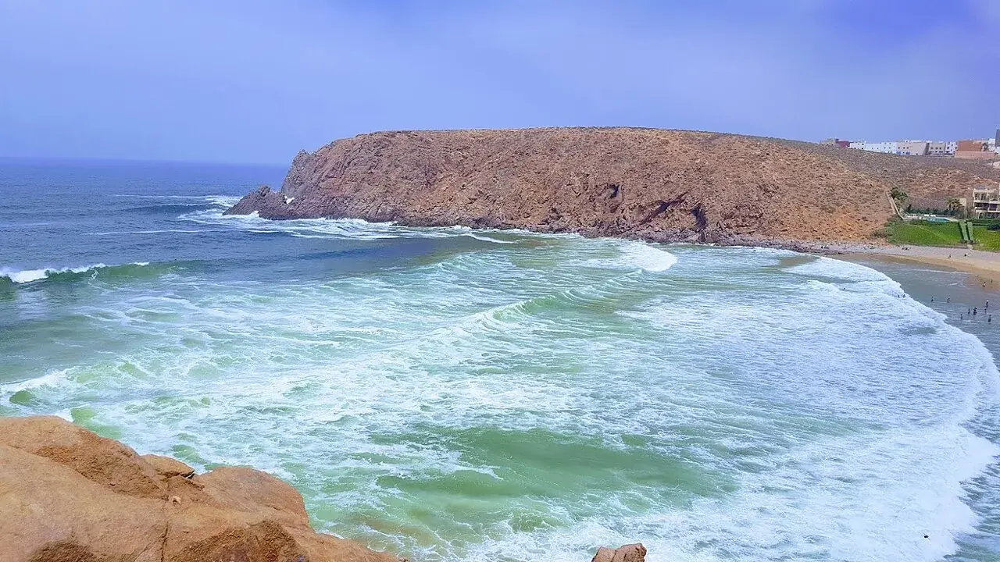

Mirleft
Sidi Ifni, Maroc · surf

Plusieurs plages entourent le village de Mirleft. Le choix du secteur fait partie de la préparation d’une session ici.
- Lieu
- Sidi Ifni, Maroc
- Niveau
- Variable selon les conditions
- Activités
- surf
- Type d'eau
- Mer / océan
- Coordonnées
- 29.59, -10.04 (position approximative du secteur)
Ouvrir dans Ocean Buddy Télécharger sur l'App Store
Source : Office national marocain du tourisme.